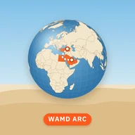

خُطى
khuta.wamdarc.comكل رحلة، أثر على الخريطة.
خُطى دفتر أسفارك: أضف رحلاتك ووجهاتها ومن رافقك، وشاهد الدول التي زرتها تضيء على كرة أرضية تديرها بإصبعك، واجمع ختمًا لكل دولة في جوازك.
المزايا
كرة أرضية تفاعلية
الدول التي زرتها تضيء، ومسارات رحلاتك مرسومة من مدينة انطلاقك.
صفحة لكل رحلة
الوجهات والمدن والتواريخ ووسيلة السفر وأفراد الرحلة.
صور ويوميات
أضف صور الرحلة واكتب يومياتك، مضغوطة ومحفوظة على جوالك.
جواز بأختام
ختم مميز لكل دولة تزورها، بتاريخ أول زيارة.
إحصائيات أسفارك
عدد الدول والمدن والقارات والرحلات في نظرة واحدة.
نسخة احتياطية
صدّر رحلاتك وصورك في ملف واحد واحتفظ به أينما شئت.
من داخل التطبيق
أضفه لشاشتك في ثلاث خطوات
تطبيقاتنا تُثبَّت من المتصفح مباشرة، بدون متجر وبدون تحميل كبير.
آيفونSafari
- افتح رابط التطبيق في Safari
- اضغط زر المشاركة أسفل الشاشة
- اختر «إضافة إلى الشاشة الرئيسية»
أندرويدChrome
- افتح رابط التطبيق في Chrome
- اضغط القائمة أعلى الشاشة
- اختر «تثبيت التطبيق»
بعد الإضافة يفتح التطبيق بملء الشاشة مثل أي تطبيق آخر، ويتحدّث تلقائيًا.
أسئلة شائعة
أين تُحفظ رحلاتي وصوري؟
على جوالك فقط، داخل التطبيق. لا يوجد حساب ولا خادم يخزّن بياناتك.
ماذا لو حذفت التطبيق أو غيّرت جوالي؟
تُحذف البيانات مع التطبيق، لذلك صدّر نسخة احتياطية من الإعدادات بشكل دوري واسترجعها في الجوال الجديد.
هل أستطيع إضافة رحلات قديمة؟
نعم، اختر التواريخ ومدينة الانطلاق لأي رحلة سابقة، حتى لو كانت من مدينة أخرى.
هل التطبيق مجاني؟
نعم، مجاني بالكامل وبدون إعلانات أو اشتراكات.
يعمل التطبيق على جوالك ولا يتطلب حسابًا. لمعرفة ما يُرسل ومتى، اطّلع على سياسة الخصوصية